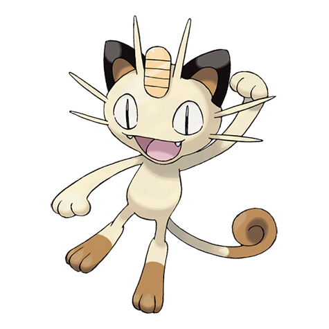

ニャースの弱点（2倍）
かくとう
#052 · ノーマル · ひっかきポケモン · 第1世代
ニャースは合計種族値290のネコ型ポケモン。素早さ90に、ちゃんと仕事をするとくせいを3つ備えています。序盤作品のコイン投げマスコットであり、ペルシアン系統の最初の進化段階です。

BST 290
とくせい：ものひろい・テクニシャン・きんちょうかん（隠れ特性） · 進化段階：最初の段階
この表の2項目は、18タイプの相性をひとつにまとめた タイプ相性表.
かくとう
ゴースト
ルカリオもフシギダネも、集めるためではなく戦うために作られた系統がどんな姿になるかを教えてくれます。
コインを集めるネコ
図鑑番号052のノーマルタイプで、第1世代から登場するペルシアン系統の最初の段階です。レベル28で進化します。とくせいは通常がものひろいとテクニシャン、隠れ特性がきんちょうかん。進化前のポケモンはいません。
シリーズでの立ち位置は、対戦とはほとんど関係がありません。アニメの悪役側のマスコットで、人間の言葉を話すポケモンであり、種族値を知る前から多くの人が見分けられる一匹です。ゲームの中では、お金にまつわる地味ではっきりした役割を持っていて、その役割は対戦で使われた型よりも長く生き残りました。
ニャースは「ネコにこばん」を覚えます。相手にダメージを与えながらコインをばらまき、戦闘のあとで手持ちのお金に加算される技です。序盤作品では戦闘中にお金を増やせる唯一の手段だったので、ニャースを連れ歩く価値は本当にありました。
その仕組みが、このポケモンにダメージ以外の目的を与えました。お金のポケモンという立ち位置は、コインを握った姿で描かれるデザインにもそのまま残っています。序盤作品では財布を早く満たす最短ルートで、それだけでパーティ枠に入れる理由になりました。
ものひろいは戦闘後にアイテムを拾ってくるので、長いプレイの中ではパーティ枠がそのまま収入源になります。テクニシャンは威力60以下の技の威力を1.5倍にするので、この進化段階で覚える技のほとんどが対象です。きんちょうかんは相手に持っているきのみを食べさせません。
種族値合計290のポケモンとしては、かなり恵まれた並びです。対戦で選ばれるのはテクニシャンで、運に頼らず弱い技の計算を変えられる点が評価されています。ニャースが下位の環境に顔を出す理由もそこにあります。3つとも、チームを選ばずに機能するのも珍しいところです。
目を引くのは素早さ90で、第1進化としてはかなり速いほうです。残りは薄く、HP40・こうげき45・ぼうぎょ35・とくこう40・とくぼう40と、いずれも低い側に並びます。
結果として、先に動くけれど長くは生き残らないポケモンになります。戦いに勝つために作られておらず、ゲームもそれを求めていません。価値はお金、アイテム、そしてとくせいの側にあります。素早さも、何かに止めを刺される前に一発入れる用途がほとんどで、耐久のある相手にはその一発も足りません。
ダメージが増えるのはかくとうだけです。ゴーストはまったく通らず、軽減されるタイプもないので、表に載るのはちょうど2項目になります。18タイプのうち残りはすべて等倍です。
この薄い相性表は、ノーマルタイプが共通して背負っている取引のようなものです。弱点1つ、無効1つ、耐性なしというシンプルな守りの設計で、これだけ小さいポケモンでは勝敗を左右することもあまりありません。
パーティは パーティ編成で組み、ルールは ヌズロック編成に記録して、余った枠は ランダム選出.
性格は ポケモン性格表で決めて、数値の配分は 個体値計算。コイン投げなら ポケモンルーレット.
ほかのツールなら、 ランダムメガシンカ そして ランダム色違い生成 でメガシンカや色違いを、 色違いの出現率 でその数字の裏付けを、 このポケモンだあれ？ で当てもの遊びを。
ニャースには地域ごとの姿が2種類あり、片方はあくタイプ、もう片方ははがねタイプです。種族値もとくせいもそれぞれ別で、どちらも元の姿とは動きが違います。1つの姿に詳しいトレーナーでも、他の2つは調べ直す必要があります。
そのせいで、この種族は名前から中身を思い浮かべにくいポケモンのひとつになっています。ゲームが違えば、同じニャースでもまったく別のポケモンだからです。このページで扱っているのは、カントーのノーマルタイプの姿です。
戦力というより、補助の枠として使うポケモンです。しばらくパーティに入れて拾いものを回収し、本気の戦闘では頼らずにペルシアンまで育てる。制限というより、ゲームが与えた役割そのもので、図鑑の中でも同じ働きをするポケモンは他にいません。
気楽に進めたい人にとっては便利さが目的で、対戦向けに育てる人にとってはとくせいの選択がビルドのすべてになります。どちらにしても、このネコは一戦も勝たずに居場所を確保してしまう。ポケモンに組み込まれた、少し変わった価値の形です。
よくある質問
カントーのニャースはノーマルの単タイプで、弱点1つ、無効1つ、耐性なしです。リージョンフォームはタイプ自体が異なります。
かくとうだけです。ゴースト技はまったく通らず、ダメージが軽減されるタイプもありません。
レベル28でペルシアンに進化します。アイテムも通信も不要です。小さな姿のまま素早さと拾いものを活かしたいなら、進化を遅らせることもできます。
通常がものひろいとテクニシャン、隠れ特性がきんちょうかんです。ものひろいは戦闘後にアイテムを拾い、テクニシャンは弱い技を強化し、きんちょうかんは相手にきのみを食べさせません。
ニャース、そしてレベル28でペルシアンの2段階です。リージョンフォームも形は同じですが、進化先のポケモンはそれぞれ違います。
戦闘の外で働くことです。ものひろいがアイテムを集め、ネコにこばんがお金を稼ぎ、素早さ90があれば大事な場面の前に一発入れることもできます。